건축산업기사 (2012-08-26 기출문제)
1과목: 건축계획
1. 복층형 아파트에 관한 설명으로 옳지 않은 것은?
- 엘리베이터의 정지 층수를 적게 할 수 있다.
- 복도가 없는 층은 프라이버시 확보가 용이하다.
- 복도가 없는 층은 통풍 및 채광 확보가 용이하다.
- 다양한 평면 구성은 불가능하나 여유있는 공간을 확보할 수 있다.
(정답률: 79%)

2. 다음과 같은 특징을 갖는 학교 운영방식은?
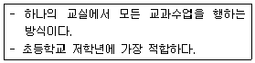
- 달톤형
- 플래툰형
- 종합교실형
- 교과교실형
(정답률: 88%)
3. 학교 건축에서 다층교사에 관한 설명으로 옳지 않은 것은?
- 집약적인 평면계획이 가능하다.
- 학년별 배치, 동선 등에 신중한 계획이 요구된다.
- 시설의 집중화로 효율적인 공간 이용이 가능하다.
- 구조계획이 단순하며, 내진 및 내풍구조가 용이하다.
(정답률: 77%)
4. 상점의 판매방식에 관한 설명으로 옳지 않은 것은?
- 대면판매는 상품을 설명하기에 용이한 방식이다.
- 측면판매는 대면판매에 비해 넓은 진열면적의 확보가 가능하다.
- 대면판매는 직원동선의 이동성이 많아 고정된 위치를 확보하기가 어렵다.
- 측면판매는 고객이 직접 진열된 상품을 접촉할 수 있는 관계로 충동구매와 선택이 용이하다.
(정답률: 79%)
5. 사무소 건축의 코어의 기능에 관한 설명으로 옳지 않은 것은?
- 내력적 구조체로서의 기능 수행
- 공용부분을 집약시켜 유효면적을 증가시키는 기능 수행
- 엘리베이터와 에스컬레이터, 계단실의 집약으로 운송설비의 효율성을 증가시키는 기능 수행
- 설비 및 교통요소들의 존(Zone)을 형성하여 업무공간의 융통성을 증가시키는 기능 수행
(정답률: 50%)
6. 상점의 정면(Facade) 구성에 요구되는 AIDMA 법칙에 해당하지 않는 것은?
- 접근(Access)
- 욕구(Desire)
- 기억(Memory)
- 관심(Interest)
(정답률: 75%)
7. 학교 건축에서 교실의 배치유형에 관한 설명으로 옳지 않은 것은?
- 클러스터형은 학급단위의 명확한 독립성 확보가 불가능하다.
- 엘보우형은 학습의 순수율이 높으며, 일조 및 통풍 조건이 양호하다.
- 클러스터형은 교실블록과 관리블록 간의 동선이 길어지는 단점이 있다.
- 엘보우형은 교실의 개성 표현이 힘들며, 복도면적이 증가하고 소음이 많이 발생한다.
(정답률: 46%)
8. 공장 건축에서 자연채광 계획에 관한 설명으로 옳은 것은?
- 톱날지붕형태일 경우 채광창은 남향으로 한다.
- 광선을 밝게 하기 위해 항상 투명유리를 사용한다.
- 벽면 및 색채계획 시 빛의 반사에 대한 고려가 필요하다.
- 자연채광은 피로감을 많이 주므로 가능한 한 차단한다.
(정답률: 71%)
9. 다음 중 주택에서 가사노동의 경감을 위한 방법과 가장 거리가 먼 것은?
- 설비를 좋게 하고 되도록 기계화할 것
- 능률이 좋은 부엌시설이나 가사실을 갖출 것
- 평면에서의 주부의 동선이 단축되도록 할 것
- 청소 등의 노력을 절감하기 위하여 좁은 주거로 계획할 것
(정답률: 87%)
10. 각종 연립주택에 관한 설명으로 옳지 않은 것은?
- 중정형 주택은 중정을 아트리움으로 구성하는 관계로 아트리움 주택이라고도 한다.
- 로우 하우스는 지형 조건에 따라 다양한 배치 및 집약적인 공동설비 배치가 가능하다.
- 테라스 하우스는 경사지를 적절하게 이용할 수 있으며, 각 호마다 전용의 정원을 갖는다.
- 타운 하우스는 도로에서 2층으로 진입하므로 2층은 생활공간, 1층은 수면공간의 공간 구성을 갖는다.
(정답률: 80%)
11. 다음 중 고층사무소 건축에서 층고를 낮게 잡는 이유와 가장 거리가 먼 것은?
- 층고가 높을수록 공사비가 높아지므로
- 실내공기조화의 효율을 높이기 위하여
- 제한된 건물 높이 한도 내에서 가능한 한 많은 층수를 얻기 위하여
- 엘리베이터의 왕복시간을 단축시킴으로서 서비스의 효율을 높이기 위하여
(정답률: 80%)
12. 부엌의 각종 설비를 작업하기에 가장 적절하게 배열한 것은?
- 냉장고 → 레인지 → 개수대 → 작업대 → 배선대
- 냉장고 → 개수대 → 작업대 → 레인지 → 배선대
- 냉장고 → 개수대 → 레인지 → 작업대 → 배선대
- 냉장고 → 작업대 → 레인지 → 개수대 → 배선대
(정답률: 73%)
13. 업무시설 중 사무소에서 장애인 등의 편의를 위해 건축물의 주출입구에 턱 낮추기를 하는 경우 주출입구와 통로의 높이 차이는 최대 얼마 이하가 되도록 하여야 하는가?
- 1cm
- 2cm
- 4cm
- 5cm
(정답률: 76%)
14. 상점의 계단에 관한 설명으로 옳지 않은 것은?
- 계단이 매장 중앙에 위치하면 동선을 자연스럽게 분할할 수 있다.
- 소규모 상점에서는 계단의 경사가 낮을수록 매장면적의 효율성이 증가한다.
- 원형의 나선형 계단은 차지하는 면적은 적으나 오르내리기가 원활하지 못하다는 단점이 있다.
- 상점의 깊이가 깊은 직사각형의 평면인 경우 측벽에 따라 계단을 설치하는 것이 시각적 및 공간적 측면에서 바람직하다.
(정답률: 70%)
15. 다음은 10층 이상인 공동주택에 설치되는 화물용 승강기에 관한 설명이다. ( ) 안에 공통으로 들어가는 숫자는?
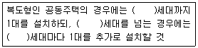
- 10
- 60
- 100
- 120
(정답률: 75%)
16. 사무소 건축의 실 단위계획 중 개방식 배치에 관한 설명으로 옳지 않은 것은?
- 독립성이 결핍되고 소음이 있다.
- 전면적을 유용하게 이용할 수 있다.
- 공사비가 개실 시스템보다 저렴하다.
- 방의 길이나 깊이에 변화를 줄 수 없다.
(정답률: 88%)
17. 백화점 스팬(Span)의 결정요인과 가장 관계가 먼 것은?
- 공조실의 폭과 위치
- 매장 진열장의 배치방식과 치수
- 지하주차장의 주차방식과 주차 폭
- 엘리베이터, 에스컬레이터의 유무와 배치
(정답률: 62%)
18. 한식주택은 좌식의 특징, 양식주택은 입식의 특징을 갖고 있다. 이러한 차이가 발생하는 가장 근본적인 원인은?
- 난방방법
- 조명방법
- 채광방법
- 환기방법
(정답률: 87%)
19. 주택 평면계획에서 일반적으로 인접 및 분리의 원칙이 적용된다. 다음 각 공간의 관계가 인접의 원칙에 해당하지 않는 것은?
- 거실-현관
- 거실-식당
- 식당-주방
- 침실-다용도실
(정답률: 73%)
20. 다음 설명에 알맞은 공장 건축의 레이아웃 형식은?
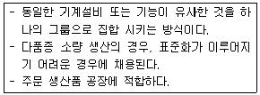
- 혼성식 레이아웃
- 고정식 레이아웃
- 공정 중심의 레이아웃
- 제품 중심의 레이아웃
(정답률: 78%)
2과목: 건축시공
21. 타일의 크기가 11×11cm일 때 가로, 세로의 줄눈은 6mm이다. 이 때 1m2에 소요되는 타일의 수량으로 가장 적당한 것은?
- 34매
- 55매
- 65매
- 75매
(정답률: 66%)
22. 점토질 지반과 사질 지반을 비교한 것 중 옳은 것은?
- 투수계수는 점토가 크고 사질은 작다.
- 가소성은 점토가 작고 사질은 크다.
- 압밀속도는 점토는 느리고 사질은 빠르다.
- 내부마찰각은 점토는 크고 사질은 작다.
(정답률: 62%)
23. 다음 중 지붕이음재료가 아닌 것은?
- 가압시멘트기와
- 유약기와
- 슬레이트
- 아스팔트 펠트
(정답률: 75%)
24. 직종별 전문업자 또는 하도급자에게 고용되어 있고, 직종장에게 고용되는 전문기능 노무자로서 출역일수에 따라 임금을 받는 노무자는?
- 직용노무자
- 정용노무자
- 임시고용노무자
- 날품노무자
(정답률: 46%)
25. 가설공사에서 기준점(Bench mark)의 설치 장소로서 가장 부적절한 것은?
- 건물 주변의 담
- 인접 건물
- 공사장 근처의 건물 외부
- 시공하고 있는 건물의 기초부
(정답률: 75%)
26. 서중 콘크리트에 관한 기술 중 옳지 않은 것은?
- 콘크리트의 공기연행이 용이하여 혼화제 사용이 불필요하다.
- 콘크리트 응결이 빠르므로 콜드조인트(Cold joint)가 발생하기 쉽다.
- 콘크리트는 비빈 후 되도록 빨리 타설하는 것이 바람직하다.
- 콘크리트 재료는 온도가 되도록 낮아지도록 하여 사용한다.
(정답률: 63%)
27. 다음 중 콘크리트의 양생 방법과 거리가 먼 것은?
- 전기양생
- 증기양생
- 습윤양생
- 방부양생
(정답률: 60%)
28. CPM 방식에서 네트워크(Network) 공정표의 용어에 대한 설명이 옳지 않은 것은?
- 액티비티(Activity) : 프로젝트를 구성하는 작업 단위
- 플로우트(Float) : 작업의 여유시간
- 주 공정선(Critical path) : 개시 결합점에서 종료 결합점에 이른 가장 긴 패스
- 슬랙(Slack) : 작업을 수행하는 데 필요한 시간
(정답률: 65%)
29. 다음 흙막이공법 중 흙막이 자체가 지하 본구조물의 옹벽을 형성하는 것은?
- H-pile 및 토류판
- 소일네일링공법(Soil nailing)
- 시멘트주열벽(Soil cement wall)
- 지하연속벽(Slurry wall)
(정답률: 79%)
30. 철골구조의 내화피복공법과 가장 거리가 먼 것은?
- 성형판붙임공법
- 미장공법
- 뿜칠공법
- 심초공법
(정답률: 41%)
31. 왕대공 지붕틀에서 지붕틀 상호 간의 연결을 튼튼히 하고 평보의 옆 휨을 막기 위하여 평보와 평보 사이에 걸쳐대는 부재로 옆휨막이 또는 대공밑둥잡이라고도 불리우는 것은?
- 대공가새
- 보잡이
- 귀잡이보
- 버팀대
(정답률: 54%)
32. 무량판구조 혹은 평판구조에 사용되는 특수상자모양의 기성재 거푸집으로 우물반자의 형식으로 되어있는 것은?
- 클라이밍폼(Climbing form)
- 와플폼(Waffle form)
- 트래블링폼(Traveling form)
- 유로폼(Euro form)
(정답률: 69%)
33. 목재의 일반적인 특징에 대한 설명으로 옳지 않은 것은?
- 장대재를 얻기 쉽고, 다른 구조재료보다 가볍다.
- 열전도율이 적으므로 방한, 방서성이 뛰어나다.
- 건습에 의한 신축변형이 심하다.
- 부패 및 충해에 대한 저항성이 뛰어나다.
(정답률: 80%)
34. 건축공사 견적 방법 중 가장 정확한 공사비의 산출이 가능한 견적 방법으로 옳은 것은?
- 명세견적
- 개산견적
- 입찰견적
- 설계견적
(정답률: 64%)
35. 벽돌구조의 아치(Arch)에 대한 기술 중 옳지 않은 것은?
- 부재의 하부에 인장력이 생기지 않는 구조이다.
- 창문의 너비가 1m 정도일 때는 평아치로도 할 수 있다.
- 문꼴 너비가 2m 이상으로 집중하중이 올 때는 인방보 등을 써서 보강한다.
- 아치벽돌을 특별히 주문 제작하여 만든 것을 거친아치라고 한다.
(정답률: 60%)
36. 다음 방수공법 중 멤브레인방수에 해당되지 않는 것은?
- 아스팔트방수
- 합성고분자시트방수
- 도막방수
- 액체방수
(정답률: 45%)
37. 목구조에 사용하는 보강철물이 아닌 것은?
- 컬럼밴드
- 안장쇠
- 주걱 꺽쇠
- 감잡이쇠
(정답률: 77%)
38. 가설건물 중 시멘트창고의 구조에 대한 설명 중 옳지 않은 것은?
- 바닥구조는 마루널깔기가 보통이며 가능하면 그 위에 루핑을 깐다.
- 주위에는 배수구를 설치하여 물 빠짐을 좋게 한다.
- 통풍이 잘 되도록 가능한 한 개구부의 크기를 크게 한다.
- 시멘트의 높이 쌓기는 13포대를 한도로 한다.
(정답률: 85%)
39. 다음 중 철근의 이음 위치를 결정하는 원칙으로 옳지 않은 것은?
- 철근의 이음부는 구조상 취약한 부분이 되기 때문에 인장응력이 최대로 작용하는 곳에서는 이음을 하지 않는 것이 좋다.
- 주근의 이음은 구조부재에 있어 인장력이 가장 작은 부분에 둔다.
- 지름이 다른 주근을 잇는 경우에는 작은 주근의 지름을 기준으로 한다.
- 이음의 위치는 가능하면 응력이 큰 곳을 피하고, 동일한 개소에 철근 수의 반 이상을 잇는 것이 좋다.
(정답률: 42%)
40. 다음 중 시멘트의 주성분이 아닌 것은?
- 실리카
- 염화칼슘
- 산화철
- 석회
(정답률: 54%)
3과목: 건축구조
41. 그림과 같은 왕대공 트러스의 C점에서 P가 작용할 때 응력이 생기지 않는 부재는 몇 개인가?(단, 트러스 자체의 무게는 무시)
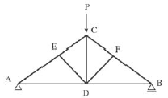
- 0개
- 1개
- 2개
- 3개
(정답률: 48%)
42. 지름 400mm인 기성콘크리트말뚝을 시공할 때 그 중심간격으로 가장 적당한 것은?
- 800mm
- 900mm
- 1,000mm
- 175mm
(정답률: 63%)
43. 인장을 받는 이형철근의 직경이 9.53mm이고 콘크리트 강도가 30MPa인 표준갈고리의 기본정착길이를 구하면?(단, fy=400MPa, 에폭시 도막되지 않은 경우, mc=2,300kg/m3)
- 85mm
- 150mm
- 167mm
- 175mm
(정답률: 44%)
44. 그림과 같은 짙은 색 영역의 도형에 대한 도심 위치는 밑변으로부터 얼마인가?
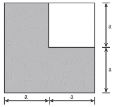
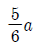
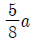
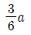
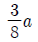
(정답률: 32%)
45. 일반적인 건축 구조물의 하중 전달 경로를 순서대로 옳게 표현한 것은?
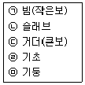
- ㉡ → ㉢ → ㉠ → ㉤ → ㉣
- ㉡ → ㉠ → ㉢ → ㉤ → ㉣
- ㉠ → ㉢ → ㉡ → ㉣ → ㉤
- ㉠ → ㉢ → ㉡ → ㉤ → ㉣
(정답률: 53%)
46. 그림과 같은 보의 최대전단응력도로 옳은 것은?
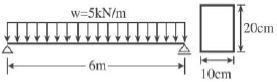
- 1.125MPa
- 2.564MPa
- 3.496MPa
- 4.253MPa
(정답률: 44%)
47. 무근콘크리트기둥이 축방향력을 받아 재축방향으로 0.5mm변형하였다. 좌굴을 고려하지 않을 경우 축방향력은?(단, 단면400×400mm, 길이 4m, 콘크리트탄성계수는 2.1×104MPa임.)
- 300kN
- 360kN
- 420kN
- 480kN
(정답률: 47%)
48. 그림은 극한강도설계법에서 단근 장방형 보의 응력도를 표시한 것이다. 압축력 C값으로 옳은 것은?(단, fck=21MPa, fy=400MPa, As=300mm2, b=350mm)
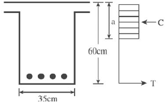
- 110.0kN
- 112.5kN
- 115.0kN
- 120.0kN
(정답률: 35%)
49. 그림과 같은 구조물의 부정정 차수는?
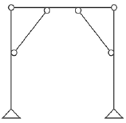
- 1차 부정정
- 2차 부정정
- 3차 부정정
- 4차 부정정
(정답률: 53%)
50. 철근콘크리트 강도설계법에서 처짐을 계산하지 않는 경우 단순지지된 보의 최소 춤(h)으로 적당한 것은?(단, 보의 길이=5,000mm, 보통콘크리트 사용, fy=400MPa)
- 312.5mm
- 365.2mm
- 412.6mm
- 432.8mm
(정답률: 47%)
51. 강도설계법에 의한 철근콘크리트 부재 설계 시 겹침이음을 하지 않아야 하는 철근은?
- D25를 초과하는 철근
- D29를 초과하는 철근
- D22를 초과하는 철근
- D35를 초과하는 철근
(정답률: 75%)
52. 그림과 같은 완전대칭 라멘구조에서 B-E부재에 발생되는 휨모멘트MBE의 크기는?
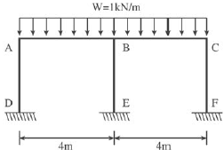
- 0
- 1.5kNㆍm
- 2kNㆍm
- 4kNㆍm
(정답률: 60%)
53. 그림과 같은 목재보의 최대 처짐은?(단, E=10,000MPa이고자중은 무시한다.)
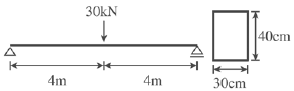
- 45mm
- 30mm
- 20mm
- 15mm
(정답률: 48%)
54. 극한강도설계법에 의한 철근콘크리트 부재의 장기처짐에 대한 설명으로 옳은 것은?
- 압축철근비가 클수록 장기처짐은 감소한다.
- 장기처짐은 즉시처짐과 관계가 없다.
- 장기처짐은 상대습도, 온도 등 제반 환경에는 영향을 크게 받으나 부재의 크기에는 영향을 받지 않는다.
- 시간경과계수의 최대 값은 3이다.
(정답률: 42%)
55. 강도설계법에 의한 전단설계 시 부재 축에 직각인 전단철근을 사용할 때 전단철근에 의한 전단강도 Vs는?(단, s는 전단철근의 간격)
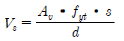
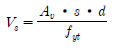
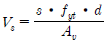
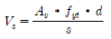
(정답률: 50%)
56. 그림과 같은 보에서 지점 B가 6kN까지의 반력을 지지할 수 있다. 하중 9kN은 A점에서 몇 m까지 이동할 수 있는가?
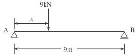
- 3m
- 4m
- 5m
- 6m
(정답률: 35%)
57. 강도설계법일 경우 현장치기콘크리트에서 옥외의 공기나 흙에 직접 접하지 않는 콘크리트 설계기준 강도가 40N/mm2 이상인 기둥의 최소 피복두께로 적당한 것은?
- 50mm
- 40mm
- 30mm
- 20mm
(정답률: 45%)
58. 그림과 같은 내민보에서 B지점의 반력과 그 방향은?
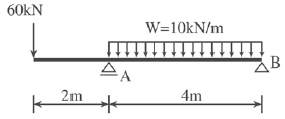
- 20kN(상향)
- 20kN(하향)
- 10kN(상향)
- 10kN(하향)
(정답률: 36%)
59. 4변 고정된 철근콘크리트슬래브에서 장변의 길이가 8m일 때 2방향 슬래브가 설계되려면 단변의 길이는?
- 1m 이상
- 2m 이상
- 3m 이상
- 4m 이상
(정답률: 57%)
60. 그림에서 A, B, C 각 점에 대한 모멘트의 크기를 비교한 것중 옳은 것은?
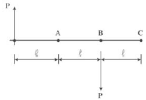
- MA＞4MB＞MC
- MA＜MB＜MC
- MA=MB＞MC
- MA=MB=MC
(정답률: 57%)
4과목: 건축설비
61. 수관보일러에 관한 설명으로 옳지 않은 것은?
- 지역난방에 사용이 가능하다.
- 예열시간이 짧고 효율이 좋다.
- 부하변동에 대한 추종성이 높다.
- 연관식보다 사용압력은 낮으나 설치면적이 작다.
(정답률: 46%)
62. 200V의 전압을 가했을 때 8A의 전류가 흐른다면 저항은 몇 Ω인가?
- 16Ω
- 25Ω
- 40Ω
- 50Ω
(정답률: 64%)
63. 통기배관에 관한 설명으로 옳지 않은 것은?
- 각개통기방식의 경우, 반드시 통기수직관을 설치한다.
- 통기수직관과 빗물수직관은 겸용하는 것이 경제적이며 이상적이다.
- 배수수직관의 상부는 연장하여 신정통기관으로 사용하며, 대기중에 개구한다.
- 통기수직관의 하부는 최저위치에 있는 배수수평지관보다 낮은 위치에서 배수수직관에 접속하거나 또는 배수수평주관에 접속한다.
(정답률: 65%)
64. 급탕배관설계 및 시공상 주의점으로 옳지 않은 것은?
- 상향배관인 경우 급탕관은 상향구배로 한다.
- 급탕관의 최상부에는 공기빼기장치를 설치한다.
- 중앙식 급탕설비는 원칙적으로 자연순환방식으로 한다.
- 관의 신축을 고려하여 건물의 벽 관통 부분의 배관에는 슬리브를 설치한다.
(정답률: 50%)
65. 제1종 접지공사의 접지 저항값은 최대 얼마 이하로 하여야 하는가?
- 10Ω
- 20Ω
- 30Ω
- 40Ω
(정답률: 60%)
66. 옥내소화전의 설치개수가 가장 많은 층의 설치개수가 4개인 경우, 옥내소화전설비의 수원의 저수량은 최소 얼마 이상이 되도록 하여야 하는가?(단, 층수가 30층 미만인 경우)
- 2.6m3
- 7m3
- 10.4m3
- 14m3
(정답률: 65%)
67. 복사난방에 관한 설명으로 옳지 않은 것은?
- 복사열에 의한 난방이므로 쾌감도가 높다.
- 열용량이 작기 때문에 간헐난방에 적합하다.
- 천장고가 높은 곳에서도 난방감을 얻을 수 있다.
- 실내에 방열기를 설치하지 않으므로 바닥이나 벽면을 유용하게 이용할 수 있다.
(정답률: 65%)
68. 급수의 오염원인과 가장 거리가 먼 것은?
- 워터해머
- 배관의 부식
- 크로스 커넥션
- 저수탱크의 정체수
(정답률: 73%)
69. 외기온도 34℃, 상대습도 70%, 실내온도 27℃, 상대습도 60%인 조건하에서 틈새바람 100m3/h가 실내로 유입되었다. 이로 인해 발생하는 냉방현열부하는?(단, 공기의 밀도는 1.2kg/m3, 공기의 정압비열은 1.01kJ/kgㆍK이다.)
- 약 174W
- 약 236W
- 약 350W
- 약 465W
(정답률: 53%)
70. 열관류율 K=5W/m2ㆍK인 유리창을 통하여 이동하는 열량은? (단, 유리창의 면적은 10m2이며, 실내외 공기의 온도차는 30℃이다.)
- 50W
- 150W
- 300W
- 1,500W
(정답률: 51%)
71. 광원에서 1m 떨어진 점에서 조도를 측정하였더니 100lx이었다. 이 광원의 광도는?(단, 균등 점광원인 경우)
- 100cd
- 200cd
- 300cd
- 400cd
(정답률: 53%)
72. 배수트랩에 관한 설명으로 옳지 않은 것은?
- 유효봉수깊이가 너무 낮으면 봉수를 손실하기 쉽다.
- 유효봉수깊이는 일반적으로 50mm 이상 100mm 이하이다.
- 배수관계통의 환기를 도모하여 관 내부를 청결하게 유지하는 역할을 한다.
- 유효봉수깊이가 너무 크면 유수의 저항이 증가되어 통수능력이 감소된다.
(정답률: 69%)
73. 축전지실에 관한 설명으로 옳지 않은 것은?
- 내진성을 고려한다.
- 축전지실의 천장높이는 1.8m 이상으로 한다.
- 축전지실의 전기배선은 비닐전선을 사용한다.
- 개방형축전지의 경우 조명기구 등은 내산형으로 한다.
(정답률: 50%)
74. 다음 중 생물화학적 산소요구량을 나타내는 것은?
- COD
- DO
- BOD
- PPM
(정답률: 81%)
75. 다음의 변전실 위치 결정 시 고려할 사항 중 전력손실, 전압강하 및 배선비와 가장 관련이 깊은 것은?
- 장래 부하증설을 고려할 것
- 외부로부터 전원의 인입이 편리할 것
- 기기를 반입, 반출하는 데 지장이 없을 것
- 부하의 중심에 가깝고 배전에 편리한 장소일 것
(정답률: 61%)
76. 다음 중 최저필요급수압력이 가장 높은 대변기 세정수의 급수 방식은?
- 사이펀식
- 로우탱크식
- 하이탱크식
- 플러시밸브식
(정답률: 50%)
77. 배관의 마찰손실수두와 가장 관계가 먼 것은?
- 관의 길이
- 관내 유속
- 배관재의 강도
- 관내 표면의 거칠기
(정답률: 61%)
78. 다음의 공기조화방식 중 전수방식에 속하는 것은?
- 2중덕트방식
- 단일덕트방식
- 팬코일유닛방식
- 멀티존유닛방식
(정답률: 74%)
79. 2중덕트방식에 관한 설명으로 옳지 않은 것은?
- 혼합상자에서 소음과 진동이 생긴다.
- 부하특성이 다른 다수의 실이나 존에도 적용할 수 있다.
- 덕트스페이스가 작으며 습도의 완벽한 조절이 가능하다.
- 냉, 온풍의 혼합으로 인한 혼합손실이 있어서 에너지소비량이 많다.
(정답률: 64%)
80. 배관용 동관의 관의 두께에 따른 분류에 해당하지 않는 것은?
- K형
- L형
- M형
- N형
(정답률: 49%)
5과목: 건축관계법규
81. 다음 중 승용 승강기의 최소설치대수가 가장 많은 건축물의 용도는?(단, 6층 이상의 거실면적의 합계가 3,000m2며 8인승 승강기를 설치하는 경우)
- 업무시설
- 위락시설
- 문화 및 집회시설 중 집회장
- 문화 및 집회시설 중 전시장
(정답률: 52%)
82. 다음은 바닥면적의 산정방법에 관한 기준 내용이다. ( ) 안에 알맞은 것은?
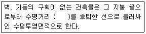
- 0.5m
- 1m
- 1.5m
- 2m
(정답률: 48%)
83. 건축물의 지붕을 평지붕으로 하는 경우 건축물의 옥상에 헬리포트를 설치하거나 헬리콥터를 통하여 인명 등을 구조할 수 있는 공간을 확보하여야 하는 대상 건축물 기준으로 옳은 것은?
- 층수가 8층 이상인 건축물로서 8층 이상인 층의 바닥면적의 합계가8,000m2 이상인 건축물
- 층수가 9층 이상인 건축물로서 9층 이상인 층의 바닥면적의 합계가8,000m2 이상인 건축물
- 층수가 10층 이상인 건축물로서 10층 이상인 층의 바닥면적의 합계가 10,000m2 이상인 건축물
- 층수가 11층 이상인 건축물로서 11층 이상인 층의 바닥면적의 합계가 10,000m2 이상인 건축물
(정답률: 70%)
84. 다음은 지하층의 정의에 관한 기준 내용이다. ( ) 안에 알맞은 것은?
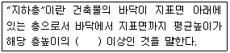
- 4분의 1
- 3분의 1
- 2분의 1
- 3분의 2
(정답률: 79%)
85. 특별피난계단의 구조에 관한 기준 내용으로 옳지 않은 것은?
- 출입구는 피난의 방향으로 열 수 있을 것
- 출입구의 유효너비는 0.9m 이상으로 할 것
- 계단은 내화구조로 하되, 피난층 또는 지상까지 직접 연결되도록할 것
- 건축물의 내부에서 노대 또는 부속실로 통하는 출입구에는 갑종방화문 또는 을종방화문을 설치할 것
(정답률: 68%)
86. 노외주차장의 출구 및 입구를 설치할 수 있는 장소에 해당하는 것은?
- 종단기울기가 8%인 도로
- 횡단보도에서 3m 떨어진 도로의 부분
- 너비가 3m인 도로(주차장의 주차대수가 100대인 경우)
- 장애인복지시설의 출입구로부터 15m 떨어진 도로의 부분
(정답률: 42%)
87. 다음 중 허가대상에 속하는 용도변경은?
- 숙박시설을 업무시설로 변경
- 종교시설을 단독주택으로 변경
- 종교시설을 교육연구시설로 변경
- 제1종근린생활시설을 숙박시설로 변경
(정답률: 55%)
88. 다음 중 상업지역의 세분에 해당하지 않는 것은?
- 전용상업지역
- 일반상업지역
- 근린상업지역
- 유통상업지역
(정답률: 53%)
89. 제1종전용주거지역 안에서 건축할 수 있는 건축물에 해당하지않는 것은?
- 공관
- 아파트
- 다중주택
- 치과의원
(정답률: 75%)
90. 다음 중 주요구조부를 내화구조로 하여야 하는 건축물은?
- 위락시설 중 주점영업의 용도로 쓰는 건축물로서 집회실의 바닥면적의 합계가 200m2인 건축물
- 판매시설의 용도로 쓰는 건축물로서 그 용도로 쓰는 바닥면적의 합계가 300m2인 건축물
- 관광휴게시설의 용도로 쓰는 건축물로서 그 용도로 쓰는 바닥면적의 합계가 400m2인 건축물
- 공장의 용도로 쓰는 건축물로서 그 용도로 쓰는 바닥면적의 합계가 1,500m2인 건축물
(정답률: 33%)
91. 특별시장, 광역시장, 시장, 군수 또는 구청장이 설치하는 노외주차장에는 주차 대수 몇 대마다 한 면의 장애인 전용주차구획을 설치하여야 하는가?
- 20대
- 30대
- 40대
- 50대
(정답률: 43%)
92. 대지 및 건축물 관련 건축기준의 허용오차범위로 옳지 않은 것은?
- 바닥판 두께 : 3% 이내
- 인접건축물과의 거리 : 3% 이내
- 건축물 높이 : 2% 이내(1m를 초과할 수 없다.)
- 건폐율 : 1% 이내(건축면적 5m2를 초과할 수 없다.)
(정답률: 59%)
93. 종교시설 중 종교집회장에 설치하는 봉안당의 용도는?
- 장례식장
- 종교시설
- 묘지 관련 시설
- 제2종근린생활시설
(정답률: 50%)
94. 숙박시설의 부설주차장 설치기준으로 옳은 것은?
- 시설면적 100m2당 1대
- 시설면적 120m2당 1대
- 시설면적 150m2당 1대
- 시설면적 200m2당 1대
(정답률: 67%)
95. 다음의 건축물 층수 산정과 관련된 기준 내용 중 ( ) 안에 알맞은 것은?
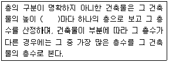
- 2.4m
- 3m
- 4m
- 4.5m
(정답률: 73%)
96. 배연설비의 설치에 관한 기준 내용으로 옳지 않은 것은?
- 배연창의 유효면적은 1m2 이상으로 할 것
- 배연구는 예비전원에 의하여 열 수 있도록 할 것
- 배연구는 연기감지기에 의하여 자동으로 열 수 있는 구조로 하되, 손으로는 열고 닫지 못하도록 할 것
- 관련 규정에 의하여 건축물에 방화구획이 설치된 경우에는 그 구획마다 1개소 이상의 배연창을 설치할 것
(정답률: 71%)
97. 건축물을 건축하거나 대수선하는 경우 국토해양부령으로 정하는 구조기준 등에 따라 그 구조의 안전을 확인하여야 하는 대상 건축물에 해당하지 않는 것은?
- 층수가 2층인 건축물
- 높이가 12m인 건축물
- 처마높이가 9m인 건축물
- 기둥과 기둥사이의 거리가 10m인 건축물
(정답률: 32%)
98. 다음은 창문 등의 차면시설에 관한 기준 내용이다. ( ) 안에 알맞은 것은?
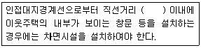
- 1m
- 2m
- 3m
- 5m
(정답률: 68%)
99. 다음 중 방화구조에 해당하지 않는 것은?
- 심벽에 흙으로 맞벽치기한 것
- 철망모르타르로서 그 바름두께가 2cm인 것
- 석고판 위에 회반죽을 바른 것으로서 그 두께의 합계가 2cm인 것
- 시멘트모르타르 위에 타일을 붙인 것으로서 그 두께의 합계가 2.5cm인 것
(정답률: 49%)
100. 노외주차장의 주차형식에 따른 차로의 최소너비 관계가 옳게 나열된 것은?(단, 이륜자동차 전용이 아닌 노외주차장으로서 출입구가 2개인 경우)
- 평행주차 ＜ 직각주차 ＜ 교차주차
- 평행주차 ＜ 교차주차 ＜ 직각주차
- 45° 대향주차 ＜ 60°대향주차 ＜ 교차주차
- 45° 대향주차 < 평행주차 < 60°대향주차
(정답률: 74%)